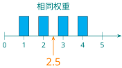
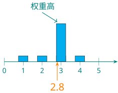
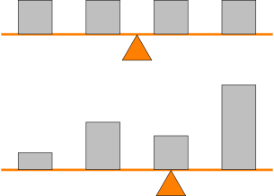

加权平均数
是一种某些数值比其他数值贡献更大的平均方式。
平均数
计算一个简单平均数时，每个数字的权重都是一样的。
比如下面是对 1、2、3 和 4 求平均：

把这几个数加起来，再除以数量：
\begin{align*}
\text{平均数} &= \frac{1 + 2 + 3 + 4}{4} \\
&= \frac{10}{4} \\
&= 2.5
\end{align*}
权重
可以理解为，这4个数各自的“权重”都是 \(\frac{1}{4}\)：
\begin{align*}
\text{平均数} &= \frac{1}{4} × 1 + \frac{1}{4} × 2 + \frac{1}{4} × 3 + \frac{1}{4} × 4 \\
&= 0.25 + 0.5 + 0.75 + 1 \\
&= 2.5
\end{align*}
结果一样。
现在调整一下。让 \(3\) 的权重变成 \(0.7\)，其他三个数各占 \(0.1\)，这样总和还是 \(1\)：

\begin{align*}
\text{平均数} &= 0.1 × 1 + 0.1 × 2 + 0.7 × 3 + 0.1 × 4 \\
&= 0.1 + 0.2 + 2.1 + 0.4 \\
&= 2.8
\end{align*}
这个加权平均数变大了，因为 \(3\) 的权重更大，拉高了整体平均值。
当某些值权重更大时，中间点（平均值）也会跟着变化：

做决定
在做决策时，如果有些因素更重要，就可以用加权平均来帮助判断。
例：小萨想买一台新相机，他制定了以下评分标准：
- 图像质量 50%
- 电池续航 30%
- 变焦范围 20%
索尼相机得分如下：图像质量 8 分（满分 10），电池续航 6 分，变焦范围 7 分。
佳能相机得分如下：图像质量 9 分，电池续航 4 分，变焦范围 6 分。
哪台更好？
算一下加权平均。
索尼：
\begin{align*}
&0.5 × 8 + 0.3 × 6 + 0.2 × 7 \\
= &4 + 1.8 + 1.4 \\
= &7.2
\end{align*}
佳能
\begin{align*}
&0.5 × 9 + 0.3 × 4 + 0.2 × 6 \\
= &4.5 + 1.2 + 1.2 \\
= &6.9
\end{align*}
所以小萨决定买索尼。
如果权重加起来不是 1 怎么办？
当权重加起来不等于 1 时，就用总和去除。
例：阿力通常每周吃 7 次午饭，但有些周只吃了 1 次、2 次或 5 次。
他的记录如下：
- 有 2 周：整周只吃了 1 次
- 有 14 周：每周吃 2 次
- 有 8 周：每周吃 5 次
- 有 32 周：每周吃 7 次
他每周平均吃几顿午饭？
用“周数”作为权重，乘上每星期的午饭次数：
\begin{align*}
&2 × 1 + 14 × 2 + 8 × 5 + 32 × 7 \\
= &2 + 28 + 40 + 224 \\
= &294
\end{align*}
再把周数加起来：
\begin{align*}
\text{总周数} &= 2 + 14 + 8 + 32 \\
&= 56
\end{align*}
然后用总饭数除以总周数：
\begin{align*}
\text{平均数} &= \frac{294}{56} \\
&= 5.25
\end{align*}
不过用表格整理数据更清楚，不容易出错：
接着上面的例子
设：
- \(w\) 是周数（权重）
- \(x\) 是午饭次数（要算平均的值）
把 \(w\) 和 \(x\) 相乘，再分别求和：
| 权重 \(w\) | 午饭次数 \(x\) | \(wx\) |
|---|---|---|
| 2 | 1 | 2 |
| 14 | 2 | 28 |
| 8 | 5 | 40 |
| 32 | 7 | 224 |
| \(\sum w = 56\) | \(\sum wx = 294\) |
再用总和除一下：
\begin{align*}
\text{平均数} &= \frac{294}{56} \\
&= 5.25
\end{align*}
和前面的结果一致。
由此得出公式：
\[
\text{加权平均数} = \frac{\sum wx}{\sum w}
\]
换句话说：先把每个权重 \(w\) 和对应的值 \(x\) 相乘，把所有结果加起来，再除以权重的总和。
小结
- 加权平均数：一种不同数值贡献不同的平均方法。
- 如果权重加起来是 1，直接把每个权重和对应数值相乘后加起来就行。
- 否则，先乘再求和，最后除以权重总和。